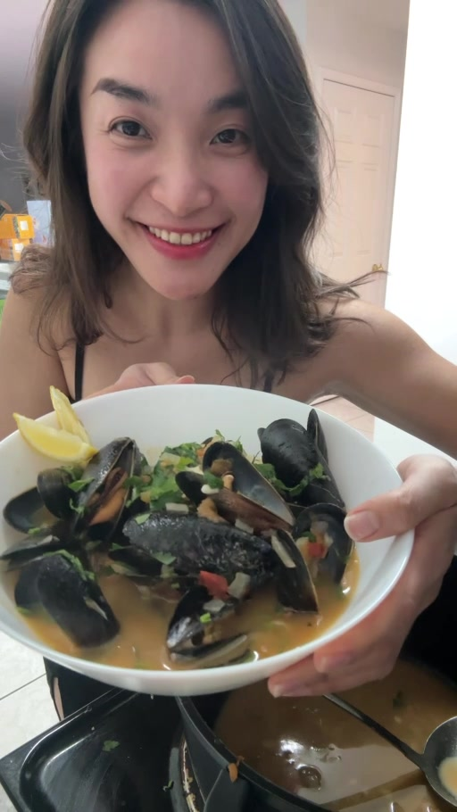

Steamed Mussels in Tomato & White Wine Sauce
A buttery, garlicky tomato-wine broth, sweet onion, fresh parsley and briny mussels — fancy enough for date night, easy enough for a weeknight.

Ingredients
- 2 lb / 900 g–1 kg fresh mussels, cleaned and debearded
- 2½ tbsp / 35 g unsalted butter
- ½ medium yellow onion, finely chopped
- 4 cloves garlic, minced
- ¾ cup / 180 mL dry white wine
- 2 medium tomatoes, chopped
- ¼ cup curly parsley, chopped
- ½ lemon, plus wedges to serve
- ¼ tsp paprika
- ⅛ tsp chili flakes, optional
Method
Clean the mussels
Rinse under cold water, scrub the shells and remove any beards. Discard cracked mussels and any that stay open when firmly tapped.
Build the sauce
Melt the butter over medium heat. Cook the yellow onion until softened, then add garlic. Stir just until fragrant.
Add tomato + wine
Add chopped tomatoes, paprika and optional chili flakes. Pour in the white wine and simmer briefly so the flavours come together.
Balance the sauce
If using, stir in the sugar and chicken powder. Keep the sauce slightly under-seasoned at this stage; the mussels will season it as they cook.
Steam — don't overcook
Add the mussels, toss once, cover tightly and steam for about 5–7 minutes, or just until the shells open. Remove from heat promptly. Discard any mussels that remain closed after cooking.
Finish
Add parsley and lemon. Taste the broth and adjust seasoning only now. Serve immediately with pasta or garlic-butter bread.
Vẹm hấp sốt cà chua & rượu vang trắng
Nguyên liệu
- 900 g–1 kg vẹm tươi, làm sạch
- 35 g / 2½ muỗng canh bơ lạt
- ½ củ hành tây vàng, băm nhỏ
- 4 tép tỏi, băm
- 180 mL rượu vang trắng khô
- 2 quả cà chua vừa, cắt nhỏ
- ¼ cup ngò tây xoăn, cắt nhỏ
- ½ quả chanh + chanh cắt miếng khi ăn
- ¼ muỗng cà phê paprika
- ⅛ muỗng cà phê ớt khô, tùy chọn
Tuỳ chọn của Lynn: ½ muỗng cà phê đường + ½ muỗng cà phê bột nêm gà.
Cách làm
1. Rửa sạch vẹm, chà vỏ và bỏ phần râu. Loại bỏ con bị nứt hoặc không khép miệng khi gõ nhẹ.
2. Đun chảy bơ, xào hành tây vàng mềm rồi cho tỏi vào đảo đến khi thơm.
3. Cho cà chua, paprika, ớt khô và rượu vang trắng vào, nấu cho sốt hoà quyện.
4. Nếu dùng, thêm chút đường và bột nêm gà. Nêm rất nhạt ở bước này vì vẹm sẽ tiết vị mặn tự nhiên.
5. Cho vẹm vào, đậy nắp và hấp khoảng 5–7 phút, đến khi vẹm vừa mở miệng. Không hấp quá lâu. Bỏ những con vẫn đóng sau khi nấu.
6. Thêm ngò tây và chanh. Nếm lại sốt rồi mới điều chỉnh độ mặn. Ăn cùng pasta hoặc bánh mì bơ tỏi.